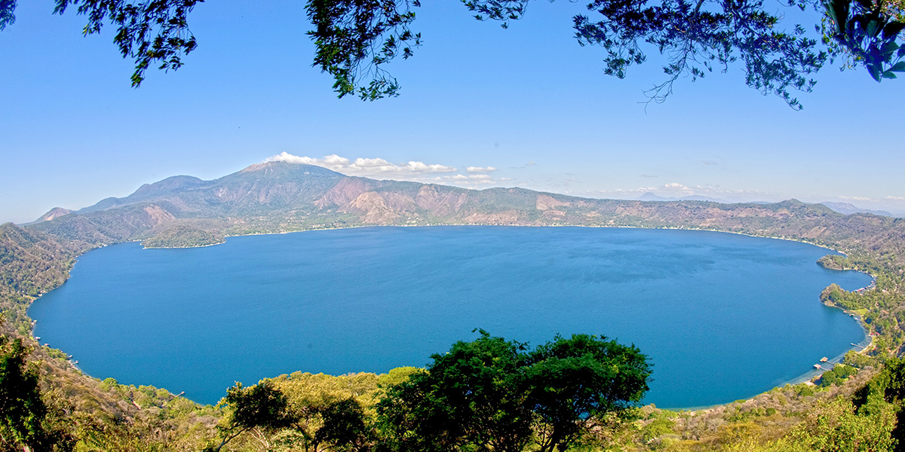

lago de coatepeque
El lago de Coatepeque es de origen volcánico y está situado a 18 km al sur de la ciudad de Santa Ana. Tiene una altitud de 745 metros sobre el nivel del mar y una superficie de 25.3 km cuadrados. Además, su profundidad de 115 m.
La caldera se formó como resultado de una gran erupción explosiva que sucedió entre 57,000-72,000 a. C. Luego se formaron conos de escorias y flujos de lava en la parte occidental de la caldera, así como 6 domos de lava (Rhyodacite). La formación del domo más reciente se inició alrededor de 8000 a.
Los accidentes más importantes del lago de Coatepeque son las dos pequeñas penínsulas denominadas “Los Anteojos” y la Isla del Cerro, donde los indígenas pipiles tenían un templo y un monolito representativo de la diosa Itzcueye. En sus riberas hay unas formaciones rocosas llamadas “Los Anteojos”. El domo norte tiene 25 metros de diámetro y 25 metros de altura, y el domo sur tiene 150 metros de diámetro y 25 metros de altur
El topónimo “Coatepeque” significa “Cerro de Culebras” en lenguaje náhuatl. En la cuenca viven más de 20,000 personas, más un promedio de 5,000 turistas mensuales que visitan el lago.
El Lago Coatepeque en el 2013 participio en la octava maravilla del mundo donde obtuvo el segundo lugar, siendo así uno de los destinos preferidos por turistas de diversos países que lo han visitado. Declarado centro de interés turístico nacional Coatepeque es uno de los destinos que no se puede dejar de visitar, simplemente porque nos enamora a primera vista.

El lago de Coatepeque tiene una condición ideal para practicar el ecoturismo, la observación de aves residentes y migratorias, se pueden realizar caminatas en los alrededores del lago, también permite la práctica de ciclismo de montaña. En el lago se practica la pesca, el buceo y se pueden recorrer sus aguas en kayak, jet ski o lancha.
Existe muchos miradores y varios restaurantes con vista al lago, haciendo más agradable la visita a este hermoso lugar.
ubicacion de el lago coatepeque